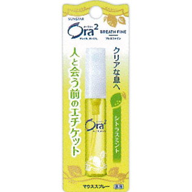

返回列表
产品名称：オーラツー ブレスファイン マウススプレー ［シトラスミント］

サンスター オーラツー ブレスファイン マウススプレー ［シトラスミント］ ６ｍｌ（医薬部外品）
メーカー サンスター
JANコード 4901616008854
商品の特徴
クリアな息へ
人と会う前のエチケット
薬用
- 成分・分量
- 有効成分：l-メントール/その他の成分：エタノール、濃グリセリン、POE硬化ヒマシ油、香料、サッカリン、Na、クエン酸Na、無水クエン酸
- 用法及び用量
- 容量 6ml
○ご使用方法○
使い始めは2～3回空押しした後、図のようにお口に青色のスプレー部をむけて2～3回(適量)押してください。